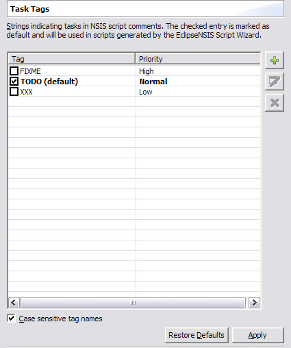

Task Tags
On this preference page, the task tags can be configured. When the tag list is not empty, the EclipseNSIS editor will insert a task marker whenever it encounters one of the corresponding tag inside any comment in an NSIS script. Generated task messages will include the tag, and range until the next line separator or comment ending.
- Task tags
- Displays a list of task tags. The checked task tag is the default. To make a task tag the default, simply check the checkbox associated with it. The initial setting has the TODO task marked as default with normal priority. The task tags can be manipulated and configured using the following buttons. ← Back
- Add
- Adds a new task tag. ← Back
- Edit
- Edits the selected task tag. ← Back
- Delete
- Deletes the selected task tag(s). ← Back
- Case sensitive task tags
- Specifies whether task tags are case-sensitive. ← Back
Previous | Contents | Next
Copyright © 2004, 2005 Sunil Kamath (IcemanK).